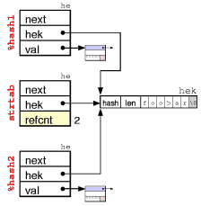

This document is meant to supplement the perlguts(1) manual page that comes with Perl. It includes commented illustrations of all (eventually?) major internal Perl data structures. Having this document handy hopefully makes reading the Perl source code easier. It might also help you interpret the Devel::Peek variable dumps. I'll try to expand it as I learn more.
The first things to look at are the data structures that represent
Perl data; scalars of various kinds, arrays and hashes. Internally
Perl calls a scalar SV (scalar value), an array AV
(array value) and a hash HV (hash value). In addition it uses
IV for integer value, NV for numeric value (aka double),
PV for a pointer value (aka string value (char*), but 'S' was
already taken), and RV for reference value. The IVs are
further guaranteed to be big enough to hold a void*.
The internal relationship between the Perl data types is really object oriented. Perl relies on using C's structural equivalence to help emulate something like C++ inheritance of types. The various data types that Perl implement are illustrated in this class hierarchy diagram. The arrows indicate inheritance.
As you can see, Perl uses multiple inheritance with C SvNULL acting as some kind of virtual base class. All the Perl types are identified by small numbers, and the internal Perl code often gets away with testing the ISA-relationship between types with the <= operator. As you can see from the figure above, this can only work reliably for some comparisons. All Perl data value objects are tagged with their type, so you can always ask an object what its type is and act according to this information.
The symbolic type names (and associated value) are:
- 0) SVt_NULL
- 1) SVt_IV
- 2) SVt_NV
- 3) SVt_RV
- 4) SVt_PV
- 5) SVt_PVIV
- 6) SVt_PVNV
- 7) SVt_PVMG
- 8) SVt_PVBM
- 9) SVt_PVLV
- 10) SVt_PVAV
- 11) SVt_PVHV
- 12) SVt_PVCV
- 13) SVt_PVGV
- 14) SVt_PVFM
- 15) SVt_PVIO
In addition to the simple type names already mentioned, the following names are found in the figure: An SvPVIV value can hold a string and an integer value. An SvPVNV value can hold a string, an integer and a double value. The SvPVMG is used when magic is attached or the value is blessed. The SvPVBM adds information for fast searching (Boyer-Moore) on the string value. The SvPVLV represents a l-value object (the result of substr). CV is a code value, which represents a perl function/subroutine/closure or contains a pointer to an XSUB. GV is a glob value and IO contains pointers to open files and directories and other state information about files. The SvPVFM is used to hold information on forms.
A Perl data object can change type as the value changes. The SV is said to be upgraded in this case. Type changes only go down the hierarchy. (See the sv_upgrade() function in sv.c.)
The actual layout in memory does not really match how a typical C++ compiler would implement a hierarchy like the one depicted above. Let's see how it is done.
In the description below we use field names that match the macros that are used to access the corresponding field. For instance thexpv_curfield of thexpvXXstructs are accessed with theSvCUR()macro. The field is referred to as CUR in the description below. This also match the field names reported by the Devel::Peek module.
The simplest type is SvNULL. It always represents an undefined scalar value. It consist of the "struct sv" only, and looks like this:
It contains a pointer (ANY) to more data, which in this case is always NULL. All the subtypes are implemented by attaching additional data to the ANY pointer.
The second field is an integer reference counter (REFCNT) which should tell us how many pointers reference this object. When Perl data types are created this value is initialized to 1. The field must be incremented when a new pointer is made to point to it and decremented when the pointer is destroyed or assigned a different value. When the reference count reaches zero the object is freed.
The third field contains some FLAGS and a TYPE sub-field.
The type field contains a code that represents one of the types shown in the type hierarchy figure above.
The SV contains 24 flag bits. The flags bits contain information on how the fields of the type value objects should be interpreted, and other state information. Some flags are just used as optimizations in order to avoid having to dereference several levels of pointers just to find that the information is not there.
The purpose of the flag bits are:
- 0) PADBUSY
- reserved for tmp or my already
- 1) PADTMP
- in use as tmp
- 2) PADMY
- in use a "my" variable
- 3) TEMP
- string is stealable
- 4) OBJECT
- This flag is set when the object is "blessed". It can only be set for value type SvPVMG or subtypes of it. This flag also indicates that the STASH pointer is valid and points to a namespace HV.
- 5) GMAGICAL (Get Magic)
- This flag indicates that the object has a magic get or len method to be invoked. It can only be set for value type SvPVMG or subtypes of it. This flag also indicate that the MAGIC pointer is valid.
- 6) SMAGICAL (Set Magic)
- This flag indicates that the object has a magic set method to be invoked.
- 7) RMAGICAL (Random Magic)
- This flag indicates that the object has any other magical methods (besides get/len/set magic method) or even methodless magic attached.
Any of GMAGICAL, SMAGICAL and RMAGICAL is called MAGICAL
- 8) IOK (Integer OK)
- This flag indicates that the object has a valid IVX field value. It can only be set for value type SvIV or subtypes of it.
- 9) NOK (Numeric OK)
- This flag indicates that the object has a valid NVX field value. It can only be set for value type SvNV or subtypes of it.
- 10) POK (Pointer OK)
- This flag indicates that the object has a valid PVX, CUR and LEN field values (i.e. a valid string value). It can only be set for value type SvPV or subtypes of it.
- 11) ROK (Reference OK)
- This flag indicates that the type should be treated as an SvRV and that the RV field contains a valid reference pointer.
- 12) FAKE
- glob or lexical is just a copy
- 13) OOK (Offset OK)
- This flag indicates that the IVX value is to be interpreted as a string offset. This flag can only be set for value type SvPVIV or subtypes of it. It also follows that the IOK (and IOKp) flag must be off when OOK is on. Take a look at the SvOOK figure below.
- 14) BREAK
- refcnt is artificially low
- 15) READONLY
- This flag indicate that the value of the object may not be modified.
- 16) IOKp (Integer OK Private)
- has valid non-public integer value
- 17) NOKp (Numeric OK Private)
- has valid non-public numeric value
- 18) POKp (Pointer OK Private)
- has valid non-public pointer value
- 19) SCREAM
- has been studied
- 20) AMAGIC
- has magical overloaded methods
- 21) SHAREKEYS
- Only used by HVs. See description of HV below.
- 22) LAZYDEL
- Only used by HVs. See description of HV below.
- 22) TAIL
- Only used by SvPVBMs. See description of SvPVBM below.
- 23) VALID
- Only used by SvPVBMs. See description of SvPVBM below.
- 23) COMPILED
The struct sv is common for all subtypes of SvNULL in
Perl. In the Perl source code this structure is typedefed to
SV, AV, HV and others. Routines that can take
any type as parameter will have SV* as parameter.
Routines that only work with arrays or hashes have AV* or
HV* respectively in their parameter list.
A scalar that can hold a string value is called an SvPV. In addition to the SV struct of SvNULL, an xpv struct is allocated and it contains 3 fields. PVX is the pointer to an allocated char array. CUR is an integer giving the current length of the string. LEN is an integer giving the length of the allocated string. The char/byte at (PVX + CUR) should always be '\0' in order to make sure that the string is NUL-terminated if passed to C library routines. This requires that LEN is always at least 1 larger than CUR.
The POK flag indicates that the string pointed to by PVX contains an valid value. A SvPV with the POK flag turned off represents undef. The PVX pointer can also be NULL when POK is off.
The SvPVIV type is like SvPV but has an additional field to hold a single integer value called IVX. The IOK flag indicates if the IVX value is valid. If both the IOK and POK flag is on, then the PVX will (usually) be a string representation of the same number found in IVX.
The SvPVNV type is like SvPVIV but has an additional field to hold a single double value called NVX. The corresponding flag is called NOK.
As a special case we also have SvIV and SvNV types that only have room for a single integer or a single double value. These are special in that the PVX/CUR/LEN fields are not present even if the ANY pointer actually points to the ghostual incarnation of them. This arrangement makes it possible for code to always access the IVX/NVX fields at a fixed offset from where the SV field ANY points.
The SvRV subtype just lets the SV field ANY point to a pointer which points to an SV (which can be any of the SvNULL subtypes). A SvRV object with ROK flag off represents an undefined value.
Subclasses of SvPV can also be treated as SvRV objects when the ROK flag is turned on for them. The PVX will then be used as the RV field of the SvRV.
The SvPVMG is like SvPVNV above, but has two additional fields; MAGIC and STASH. MAGIC is a pointer to additional structures that contains callback functions and other data. If the MAGIC pointer is non-NULL, then one or more of the MAGICAL flags will be set.
STASH (symbol table hash) his a pointer to a HV that represents some namespace/class. This field is set when the value is blessed into a package (becomes an object). The OBJECT flag will be set when STASH is.
The MAGIC structure in detail....
The SvPVMG is like SvPVMG above, but has three additional fields; BmUSEFUL, BmPREVIOUS, BmRARE. The SvPVBM value types are used internally to implement very fast lookup of the string in PVX using the Boyer-Moore algorithm. They are used by the Perl index() builtin when the search string is a constant, as well as in the RE engine. The fbm_compile() function turns normal SvPVs into this value type.
A table of 256 elements is appended to the PVX. This table contains the distance from the end of string of the last occurrence of each character in the original string. In addition fbm_compile() locates the rarest character in the string (using builtin letter frequency tables) and stores this character in the BmRARE field. The BmPREVIOUS field is set to the location of the first occurrence of the rare character. (The purpose of the BmUSEFUL field is not clear to me yet.)
The extra SvPVMG information and the character distance table is only valid when the VALID flag is on. A magic structure with the sole purpose of turning off the VALID flag on assignment, is always attached to a valid SvPVMG.
The TAIL flag is used to indicate that the search for the SvPVMG should be tail anchored, i.e. a match should only be considered at the end of the string (or before newline at the end of the string).
The TYPE is a character variable. It encodes the kind if L-value this is. Interpretation of the other L-value fields depend on the TYPE. The SvPVLVs are (almost) always magical. The magic type will match the TYPE field of the SvPVLV. The types are:
- 'x'
- Type-x LVs are returned by the
substr($string, $offset, $len)builtin.- 'v'
- Type-v LVs are returned by the
vec($string, $offset, $bits)builtin.- '.'
- Type-. LVs are returned by the
pos($scalar)builtin.- 'k'
- Type-k LVs are returned when
keys %hashis used on the left side of the assignment operator.- 'y'
- Type-y LVs are used by auto-vivification (of hash and array elements) and the foreach array iterator variable.
- '/'
- Used by pp_pushre. I don't understand this yet.
The figure below shows a SvPVLV as returned from the
substr() builtin. The first substr parameter (the
string to be affected) is assigned to the TARG field. The substr
offset value goes in the TARGOFF field and the substr length parameter
goes in the TARGLEN field.
When assignment to an SvPVLV type occurs, then the value to be assigned is first copied into the SvPVLV itself (and affects the PVX, IVX or NVX), the magic SET method is invoked which will update the TARG accordingly.
An array is in many ways represented similar to strings. An AV
contains all the fields of SvPVMG and adds the following tree fields:
ALLOC is a pointer to the allocated array. ARYLEN is a pointer to an
SV (which is returned when $#array is requested). FLAGS
contains some extra flag bits that are specific of the array subtype.
The first three fields of xpvav have been renamed even though they serve nearly the same function. PVX has become ARRAY. CUR has become FILL and LEN has become MAX. One difference is that the value of FILL/MAX is always one less than CUR/LEN would be in the same situation. The IVX/NVX fields are unused.
The array pointed to by ARRAY contains pointers to any of the SvNULL subtypes. Usually ALLOC and ARRAY both point to the start of the allocated array. The use of two pointers is similar to the OOK hack described above. The shift operation can be implemented efficiently by just adjusting the ARRAY pointer (and FILL/MAX). Similarly, the pop just involves decrementing the FILL count.
The are only 3 array flags used: (I'll try to describe them when I understand the issue)
- 0) REAL
- 1) REIFY
- 2) REUSED
Hashes are the most complex of the Perl data types. In addition to what we have seen above, HVs use HE structs to represent a key/value pairs and HEK structs to represent keys.
The HV type itself contains all the fields of SvPVMG and then adds four new fields:
As for AVs the first few fields of the xpvhv have been renamed in the same way. MAX is the number of elements in ARRAY minus one. (The size of the ARRAY is required to be a power of 2, since the code that deals with hashes just mask off the last few bits of the HASH value to locate the correct HE column for a key: ARRAY[HASH & MAX]). Also note that ARRAY can be NULL when the hash is empty (but the MAX value will still be at least 7, which is the minimum value assigned by Perl.) The FILL is the number of elements in ARRAY which is not NULL. The IVX field has been renamed KEYS and is the number of hash elements in the HASH. The NVX field is unused.
The HEs are simple structs containing 3 pointers. A pointer to the next HE and a pointer to the key and the value of the given hash element.
The HEKs are special variable sized structures that store the hash
keys. They contain 3 fields. The hash value of the string,
the length of the string, and the len+1 bytes for the
key string itself. (As a special case, a len value of
HEf_SVKEY (-2) indicate that a pointer to an SV is stored
in the HEK instead of a string. This is used for some magical hashes.)
In a perfect hash both KEYS and FILL are the same value. This means than all HEs can be located directly in the ARRAY (and all the he->next pointers are NULL).
The following two hash specific flags are found among the common SvNULL flags:
- 21) SHAREKEYS
- When this flag is set, then all HEK structures containing the same strings will be shared between hashes. This should reduce the storage occupied by hash keys. The SHAREKEYS flag is on by default for newly created HVs.
 The shared HEKs are stored in a special HV called
strtab. What is special here is that the val field of the HE structs is used as a reference counter for the HEK. The counter is incremented when new hashes link up this HEK and decremented when the key is removed from the hashes. When the reference count reach 0, the HEK (and corresponding HE) is removed fromstrtaband the storage is freed.
- 22) LAZYDEL
- This flag indicates that the hash element pointed to by EITER is really deleted. When you delete the current hash element, perl only marks the HV with the LAZYDEL flag, and when the iterator is advanced, then the element is zapped. This makes it possible to delete elements in a hash while iterating over it.